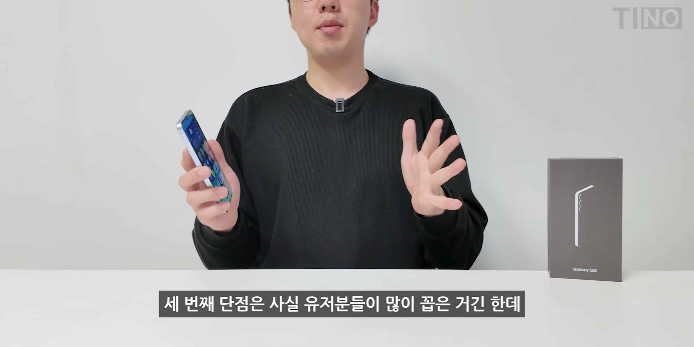

갤럭시 S25 기본형의 실사용 장단점을 자세히 살펴보는 포스팅입니다. 스펙과 가격 대비 성능, 디자인, 소프트웨어 최적화 등을 종합적으로 분석해봤습니다.
저렴한 가격
갤럭시 S25 기본형은 8 엘리트 칩셋을 탑재하고 115만 원이라는 저렴한 가격에 판매됩니다. 강력한 성능을 가진 같은 칩셋이 169만 원인 울트라 모델에 들어간다는 점은 주목할 만 합니다.
- 8 엘리트 칩셋 사용
- 115만 원의 가격으로 동일 성능
가벼운 무게
이번 S25 시리즈는 전체적으로 무게가 가벼워졌습니다. 기본형 모델도 가벼운 무게로, 최근 출시된 스마트폰 중에서 가장 가벼운 편에 속합니다.
- 최근 1~2년 출신 스마트폰 중 가장 가벼움
- 200g 이하
- 일반형도 소폭 감소
소프트웨어 최적화
갤럭시 S25 기본형은 소프트웨어 최적화에서 눈에 띄는 개선을 보여줍니다. 일관된 성능과 부드러운 애니메이션으로 사용자 경험을 개선했습니다.
- 소프트웨어 최적화가 iOS 수준으로 향상
- 최적화된 애니메이션
- 부드러운 사용자 경험 제공
향상된 스피커 성능
이번 모델의 스피커는 갤럭시 스피커 역사상 최고의 성능을 자랑합니다. 매우 만족스러운 음질을 경험할 수 있습니다.
- 전작과 비교하여 역대 최고의 스피커
- 고음 및 저음 성능 개선
- EQ 튜닝 필요 없음
배터리 성능
갤럭시 S25 기본형은 배터리 성능에서도 surprising한 효율성을 보여줍니다. 다양한 작업을 하면서도 하루 정도는 쉽게 사용할 수 있습니다.
- 실사용을 통해 배터리 효율 확인
- 풀 HD 해상도에서 소비 절약
- 하루는 충분한 사용 가능
단점: 충전 속도
충전 속도가 25W로 느린 점이 단점으로 지적됩니다. 최신 스마트폰들과 비교했을 때 확실히 느리며, 충전 시간이 오래 걸린다는 점은 아쉬운 부분입니다.
- 충전 속도 25W로 느린 편
- 기타 기기들과 비교하여 느림
- 완충 시간이 길다
단점: 초기 발열 문제
발열 문제는 여전히 해결되지 않았습니다. 카메라 사용 시 발열이 빨리 올라오며, 계속 사용하는 경우 기기가 미지근하게 느껴질 수 있습니다.
- 발열 상승이 전작보다 빠름
- 오래 사용 시 미지근한 느낌
- 겨울에도 체감되는 발열
단점: UWB 미탑재
기본형 모델에는 UWB 기능이 포함되어 있지 않아 차량키 대용으로 사용할 수 없습니다. 이는 특히 최신 차량에 대한 이용자들에게는 단점으로 작용할 수 있습니다.
- UWB 기능 부족
- 차량키 대용 사용 불가능

디스플레이 해상도 문제
갤럭시 S25 기본형은 여전히 풀 HD 해상도를 유지하고 있습니다. 스펙상 단점으로 언급되지만 실제 사용 시 해상도에 불만을 느끼기는 어렵습니다.
- 플 HD 패널 유지
- 스펙상 단점 지적됨
- 육안으로는 큰 문제 없음Tags: #갤럭시 S25 #스마트폰 리뷰 #소프트웨어 최적화 #배터리 성능 #스피커 성능 #충전 속도 #UWB 기능 #디스플레이 해상도